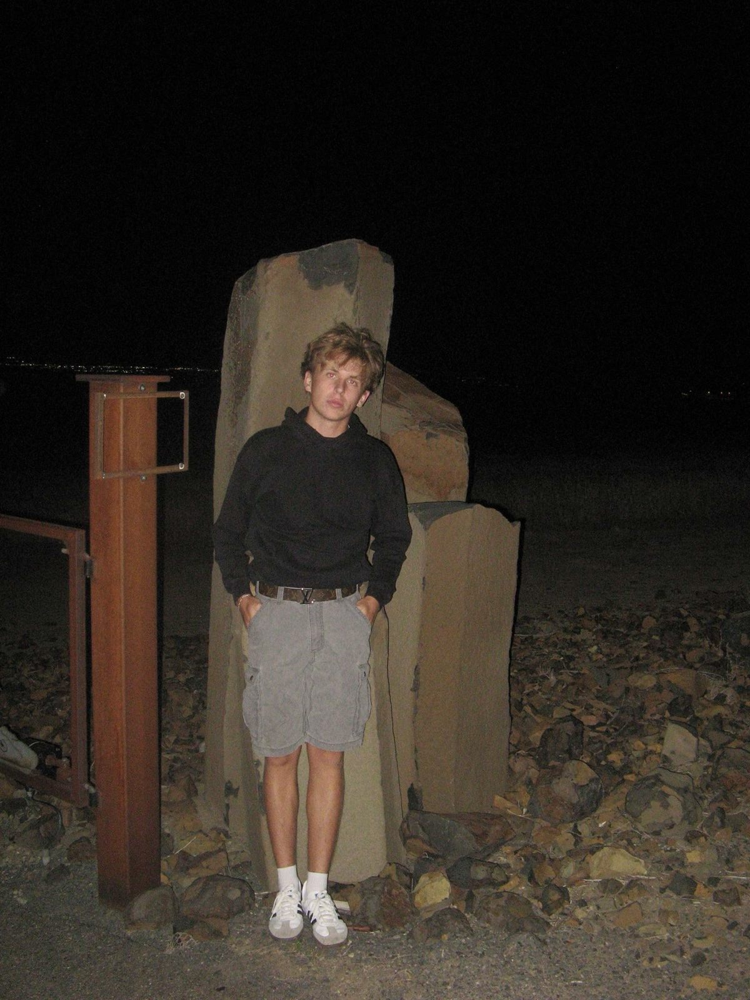

About
Hayden Pyne

I'm Hayden, a 20-year-old photographer and videographer based in Kennewick, Washington, and the person behind Pyn Visuals.
Photography and videography are what I love to do. I'm always chasing the frame that tells the whole story: the shot leaving the stick, the celebration after the whistle, the quiet moment under the lights before the game starts.
Sports are my main focus, especially lacrosse. I shoot games, tournaments, and highlight content for athletes and teams, and I bring that same eye to local businesses with promotional photos and short-form video that actually look like them. When I'm not on a sideline, I'm out shooting for fun: portraits, cars, travel, whatever catches the light.
Pyn Visuals is my independent business, so when you book a shoot, you're working with me directly. I'm based in Kennewick, work all over the Tri-Cities, and I'm always up to travel for the right game or project.
Every project starts with a conversation. Tell me what you're working on and we'll figure out the best way to capture it.
What I shoot
Photo. Video. Both.
Sports & lacrosse
Game and tournament coverage, plus player and team highlights that capture how the game actually felt.
Businesses
Promotional photos and video, and short-form social content for local businesses and organizations.
Custom projects
Events, creative ideas, and anything in between. If it can be photographed or filmed, ask.
Where
Kennewick-based. Ready to travel.
Home base is Kennewick, with local projects across the Tri-Cities. Travel is available for tournaments, events, and projects outside the area; just include the location in your inquiry.
- Kennewick
- Pasco
- Richland
- West Richland
- + travel